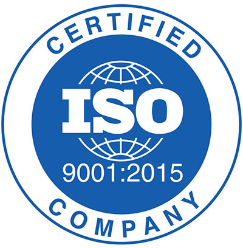

Certificaciones
Tenemos implementado un sistema de gestión de calidad, cuya política de calidad es trabajar en la búsqueda constante por entregar satisfacción a nuestros clientes mediante el desarrollo de proyectos y servicios TI adaptados a sus necesidades, cumpliendo con las normativas y reglamentaciones asociadas a la industria del software. Tenemos implementada las buenas prácticas en la gestión de servicios TI mediante personal certificado ITIL® V3, aplicamos metodología ágil (Scrum) o tradicional (PMI) para la ejecución de nuestros proyectos mediante personal certificado SMC™ y PMP®, y además contamos con un sistema de gestión de calidad basado en los requisitos de la norma ISO 9001:2015, que nos permite mantener una mejora continua en todos los procesos de la organización.
ISO 9001:2015
 Tenemos implementado un sistema de gestión de calidad basado en los requisitos de la norma ISO 9001:2015, que nos permite mantener el enfoque en el cliente y una mejora continua en todos los procesos de la organización.
ITIL® V3
Comprendemos que el éxito de las organizaciones tiene estrecha relación con sus procesos informáticos, es por ello que hemos implementado un conjunto de buenas prácticas en la Gestión de Servicios TI basado en ITIL® V3, que en los últimos años se ha convertido en un estándar de mundial.
Scrum Master (SMC)™
La metodología utilizada en nuestro departamento de desarrollo, es Scrum. Contamos con varios profesionales certificados como Scrum Master, con el objetivo de instruir a todo el equipo por un mismo camino de desarrollo, lo que nos permite ser agiles desde las distintas fases de un Proyecto de Software cambiando así, los paradigmas de metodologías más tradicionales.
Project Management Professional (PMP)®
 Nuestra otra metodología implementada para la gestión e implementación de nuestros proyectos es la dictada por el Project Management Institute (PMI), que ha sido redactada en el libro Project Management Book of Knowledge (PMBOK) en su quinta versión. Las razones son 2, primero está validada en el mundo, esta es la metodología de desarrollo de proyectos más utilizada en a nivel global y particularmente en Chile, de hecho es la única metodología que tiene un capítulo especialmente desarrollado para nuestro país, por otro lado sus similares y competidores más cercanos como CMMI a pesar de tener una importante difusión en el mundo, no le compiten de forma relevante, y por lo mismo no se han masificado de forma importante en nuestro país; y la segunda, y la segunda, nuestra experiencia como empresa especializada en software factory con años ejecutando esta metodología, es aplicable en forma natural a los desafíos informáticos de envergadura, aportando grupos de procesos que permiten asegurar los entregables de cada proyecto. Motivamos, apoyamos y privilegiamos Gerentes y Jefes de Proyectos certificados PMP, es por ello que nuestro personal de gestión de proyectos está certificado o se encuentra en proceso.
Nuestra otra metodología implementada para la gestión e implementación de nuestros proyectos es la dictada por el Project Management Institute (PMI), que ha sido redactada en el libro Project Management Book of Knowledge (PMBOK) en su quinta versión. Las razones son 2, primero está validada en el mundo, esta es la metodología de desarrollo de proyectos más utilizada en a nivel global y particularmente en Chile, de hecho es la única metodología que tiene un capítulo especialmente desarrollado para nuestro país, por otro lado sus similares y competidores más cercanos como CMMI a pesar de tener una importante difusión en el mundo, no le compiten de forma relevante, y por lo mismo no se han masificado de forma importante en nuestro país; y la segunda, y la segunda, nuestra experiencia como empresa especializada en software factory con años ejecutando esta metodología, es aplicable en forma natural a los desafíos informáticos de envergadura, aportando grupos de procesos que permiten asegurar los entregables de cada proyecto. Motivamos, apoyamos y privilegiamos Gerentes y Jefes de Proyectos certificados PMP, es por ello que nuestro personal de gestión de proyectos está certificado o se encuentra en proceso.